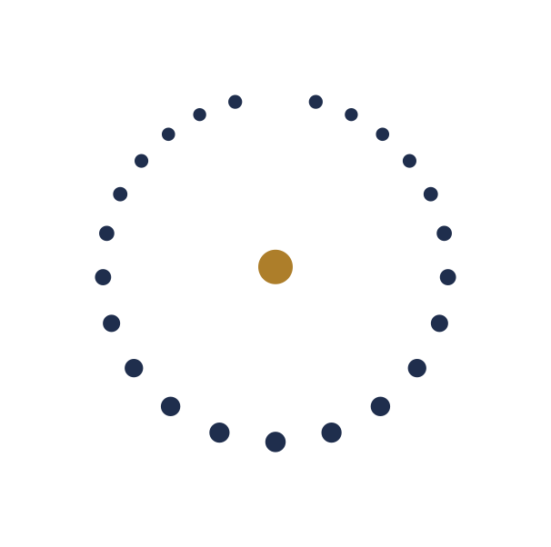

Quellen und FächerEine Lektüre von Suurah Al-hudschuraat, 49:13
Was ein Satz über Völker und Stämme in einer Gesellschaft von heute bedeutet, und was die klassische Auslegung dazu sagt.
Lesen
Alle Beiträge des Jahrbuchs und alle Beiträge, die nur im Netz erscheinen. Jeder Beitrag ist belegt, lektoriert und zitierfähig. Die Rubriken folgen dem Aufbau des Bandes.

Quellen und FächerWas ein Satz über Völker und Stämme in einer Gesellschaft von heute bedeutet, und was die klassische Auslegung dazu sagt.
Entscheidungswege in zwölf Moscheegemeinden, begutachtete Studie mit Material und Methode.
Fallstudie über einen Gemeindealltag, aus drei Perspektiven erzählt und eingeordnet.
Aus einer Bachelorarbeit am Islamologischen Institut, für den Druck überarbeitet.
Ausgearbeitete Fassung des Vortrags vom Islamologentag 2026.
Ein Beitrag zur Religionspädagogik über Ziel, Weg und Grenze des Unterrichts.
Besprechungen aus dem deutschen, bosnischen und arabischen Sprachraum.
Ein Gespräch über Forschung in der eigenen Gemeinde und die Grenzen der Nähe.
Der erste Beitrag des Schwerpunkts fragt, woran sich Zusammenhalt messen lässt.
Die Umschrift folgt Amir Zaidan. Wer nach einem arabischen Begriff sucht, findet ihn in der Schreibung des Hauses, etwa Tauhiid, Hadiith oder Tafsiir, und in arabischer Schrift. Das Glossar erklärt jeden Begriff in der Übersetzung nach Zaidan.
Rundbrief
Neue Beiträge, der Stand des Jahrbuchs, Termine des Islamologentags und der Seminare. Kein Werbepartner, keine Weitergabe der Adresse, Abmeldung mit einem Klick.